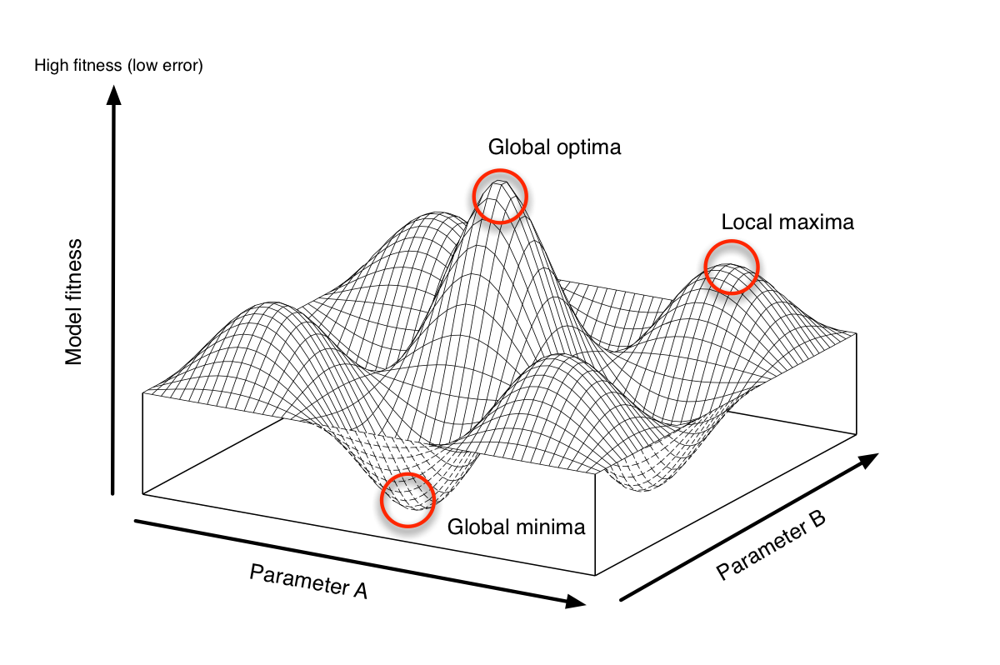

Agent-Based Modelling, the Next 20 Years: Dynamic Data Assimilation
Nick Malleson, Jon Ward, Andy Evans
Schools of Geography & Mathematics, University of Leeds
nickmalleson.co.uk
surf.leeds.ac.uk
These slides: http://surf.leeds.ac.uk/presentations.html
Abstract
Agent-based modelling is proving itself to be an extremely valuable approach to understanding and modelling social systems. In particular, the treatment of individuals directly - rather than through aggregate statistical rules - places it in an ideal position to model dynamical systems that depend on the actions and interactions of numerous individuals. Part of the success of the methodology can be attributed to its interdisciplinarity; researchers from disciplines ranging from sociology and psychology to computer science and physics have contributed to its development.
However, agent-based modelling has yet to incorporate some key ideas from fields such as meteorology, particularly with respect to improving models dynamically in response to streams of new data. Part of the explanation of this absence can be attributed to data availability - only recently have data sources begun to emerge that have the spatio-temporal resolution and volume to warrant the incorporation of methods similar to those used in the environmental sciences.
This paper begins to address this gap by experimenting with an Ensemble Kalman Filter (EnKF) as a means of dynamically assimilating data into an agent-based model of urban dynamics. The paper will demonstrate that an agent-based model coupled to an EnKF can be a reliable means to dynamically improve predictive models in response to streaming data such as that arising from social media or through devices that count the number of people passing certain points. Importantly, these data do not need to track individuals, which reduces the ethical risks associated with such invasive surveillance. Ultimately the model presented here will be used to create estimates of the size of the population at risk to phenomena such as crime victimisation or to ill health as a result of exposure to air-borne pollutants.
Overview
Background - agent-based models and making future predictions
Barriers to ABMs as predictive tools: difficult to calibrate
1. Computationally Expensive
2. Data hungry
3. Divergent
Dynamic Data Assimilation (DDA) & ABM - difficulties and outlook
Agent-Based Modelling (ABM)

Autonomous, interacting 'agents'
Model phenomena from the 'bottom-up'
Advantages:
Modelling complexity, non-linearity, emergence
Natural description of a system
Bridge between verbal theories and mathematical models
History of the evolution of the system
ABM Example - Burglary

ABM Problems
1. Computationally Expensive
Not amenable to machine-led calibration
2. Data hungry
Need fine-grained information about individual actions and behaviours
3. Divergent
Usually models represent complex systems
Projections / forecasts quickly diverge from reality
Who cares?
ABM growing in importance
Smart cities
Pedestrian simulations
Evacuation
Traffic
. . .
The most appropriate methodology for simulating complex (social) systems
(Potentially) drive urban planning decisions in a smart cities context
1. Computationally Expensive
Very large parameter space to explore
Models are usually highly non-linear
And very difficult to explore it
Lots of agents * lots of iterations * lots of model runs
But not so much of a problem as it once was
Simulating Urban Flows (surf) prototype
2. Data Hungry
Data required at every stage
Particularly for calibration and validation
But high-quality data are hard to come by
Many sources are too sparse, low spatial/temporal resolution
Censuses focus on attributes rather than behaviour and occur infrequently
Also need data from numerous scales (e.g. pattern oriented modelling: Grimm et al. 2005)
Understanding social behaviour
How to estimate leisure times / locations? Where to socialise?

Rise of Big Data
Recent explosion in data volume.
'Datafication'
Streams of data
Great potential for calibrating ABM
Example: Mobile Communications
'Big Data'
Example: Social Media


'Big Data'
Example: Geo-Apps
Smart-phone apps that capture movement / location are becoming ubiquitous
Great potential for understanding (some) urban dynamics
3. Divergence
Complex systems
One-shot calibration
Nonlinear models predict near future well, but diverge over time.

3. Divergence
Drawback with the 'typical' model development process
Waterfall-style approach is common
Calibrate until fitness is reasonable, then make predictions
But we can do better:
Better computers
More (streaming) data
Methodological gap
Dynamic Data Assimilation
Used in meteorology and hydrology to constrain models closer to reality.
We can:
Restart model with new (up to date) data
Adjust model parameters to better match reality
Dynamic Data Assimilation
How?
Particle filters
Indoor footfall (Rai and Hu, 2013.; Wang and Hu, 2015)
Kalman Filter
Air traffic (Chen et al., 2012)
Ensemble Kalman Filter
Pedestrian footfall (Ward et al., 2016)
Sequential Monte Carlo (SMC)
Wildfire (Hu, 2011; Mandel et al., 2012)
Ensemble Kalman Filter (EnKF)
Outline

Ensemble Kalman Filter (EnKF)
Maths
Broad literature, but generally tied to mathematical models (e.g. differential equations and linear functions)
Not applicable to ABM (inherently non-linear)
Working with a mathematician to do the hard work!
In all its glory: Ward et al., (2016)
Advantages
Similar to Kalman Filter (best in class)
But better for nonlinear systems
Conclusion and Outlook
Potential for ABM to be better at making future predictions
Computing power
Big Data
Data assimilation
Adapt methods used commonly in other fields
Potential for ABM + DDA + Smart Cities ...
Chen, Haiyan, Jiandong Wang, and Lirong Feng. 2012. “Research on the Dynamic Data-Driven Application System Architecture for Flight Delay Prediction.” Journal of Software 7 (2). doi:10.4304/jsw.7.2.263-268.
Grimm, Volker, Eloy Revilla, Uta Berger, Florian Jeltsch, Wolf M. Mooij, Steven F. Railsback, Hans-Hermann Thulke, Jacob Weiner, Thorsten Wiegand, and Donald L. DeAngelis. (2005) Pattern-Oriented Modeling of Agent-Based Complex Systems: Lessons from Ecology. Science 310(5750): 987–91. doi:10.1126/science.1116681.
Hu, Xiaolin. 2011. “Dynamic Data Driven Simulation.” SCS M&S Magazine 1: 16–22.
Mandel, Jan, Jonathan D. Beezley, Adam K. Kochanski, Volodymyr Y. Kondratenko, and Minjeong Kim. 2012. “Assimilation of Perimeter Data and Coupling with Fuel Moisture in a Wildland Fire–Atmosphere DDDAS.” Procedia Computer Science 9: 1100–1109. doi:10.1016/j.procs.2012.04.119.
Rai, S., and X. Hu. 2013. “Behavior Pattern Detection for Data Assimilation in Agent-Based Simulation of Smart Environments.” In 2013 IEEE/WIC/ACM International Joint Conferences on Web Intelligence (WI) and Intelligent Agent Technologies (IAT), 2:171–78. doi:10.1109/WI-IAT.2013.106.
Wang, M. and X. Hu (2015). Data assimilation in agent based simulation of smart environments using particle filters. Simulation Modelling Practice and Theory 56, 36–54.
Ward, Jonathan A., Andrew J. Evans, and Nicolas S. Malleson. 2016. “Dynamic Calibration of Agent-Based Models Using Data Assimilation.” Open Science 3 (4). doi:10.1098/rsos.150703.
Thank you
Agent-Based Modelling, the Next 20 Years: Dynamic Data Assimilation
Nick Malleson, Jon Ward, Andy Evans
Schools of Geography & Mathematics, University of Leeds
nickmalleson.co.uk
surf.leeds.ac.uk
These slides: http://surf.leeds.ac.uk/presentations.html